UX Mission
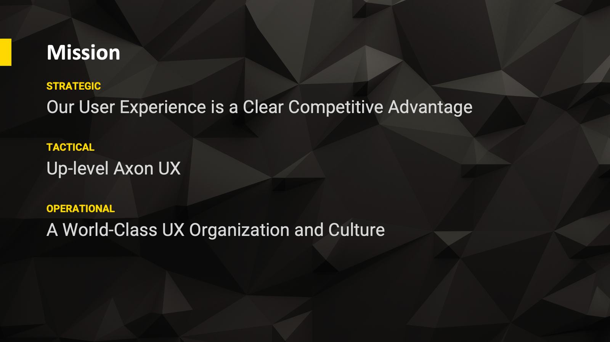
Our UX mission at Axon has 3 focus areas. A strategic one focused on building great products and a connected ecosystem, a tactical one focused on maturing the UX disciplines, and an operational one with focus on the best team and culture. We set yearly and quarterly goals that align with each of these missions.
UX Org
Over the last 5 years I built the UX org at Axon from a few Product Designers to 60+ people. I grew and hired people from mid and senior level into Director level roles. I built full UX teams for each of the product lines with a UX leader and an additional level of management under them. I introduced UX Research to the company, initially with embedded UX Researchers horizontally organized, and more recently organized under the UX Directors on each of the product lines to streamline common mission and goals. Also built a central Tech Writing and User Assistance org and grew a leader for the discipline. I also introduced and grew a Design System and Operations team designing and building everything that's common between all the products and different UX teams. Org design is one of my personal passions, especially matrix org structures balancing deep vertical execution with horizontal discipline building.

Axon Future Vision
At Axon we work relentlessly on envisioning the future of first responders. To frame our vision work and help the company get a clear joint vision of where the industry and Axon itself is heading, I worked with the executive team and external industry experts to develop a Policing Maturity Model.

AI and a connected ecosystem of devices, sensors and software applications running on the device or in the cloud will transform the first responder space in the next 10 years.
Vision Samples
Using data and AI to propose a route for Police Officers to take during their shift.
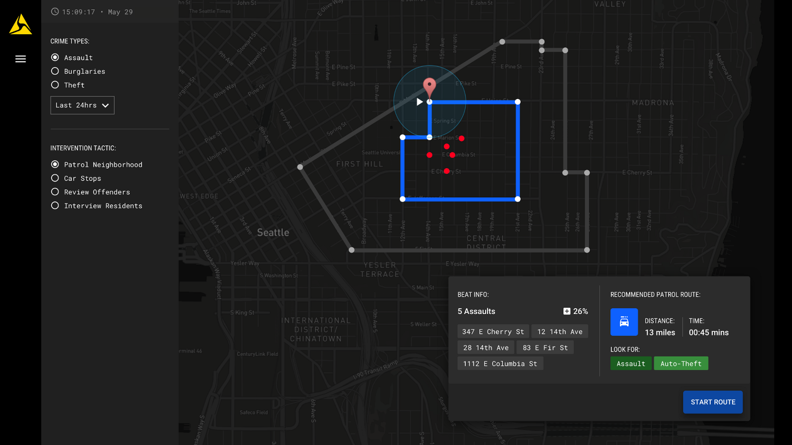
Automatic number plate recognition and contextual information about the neighborhood in case the Officer decides to make a traffic stop.

On top the 911 dispatch view with incident information and live streaming to provide situational awareness. On the bottom the backup officer view heading to the scene to assist.

Automatically generated incident view aggregating all events and signals on a timeline for later viewing by detective or prosecution and defense.
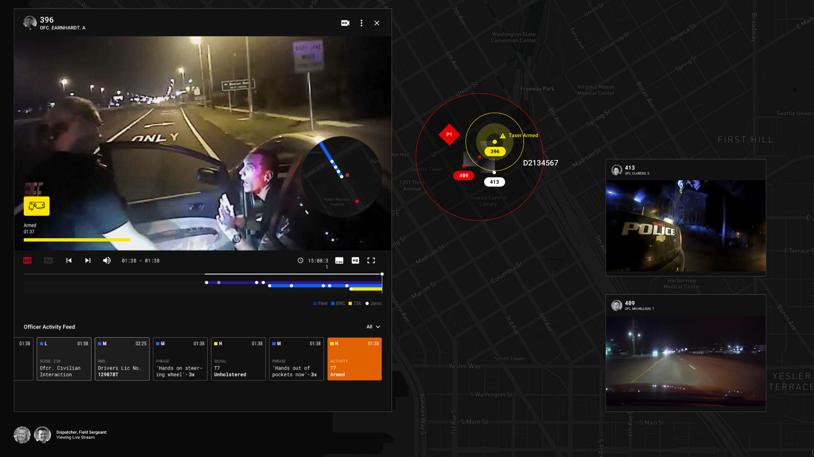
Mobile view for remote situational awareness for additional first responders who might be heading to the scene.
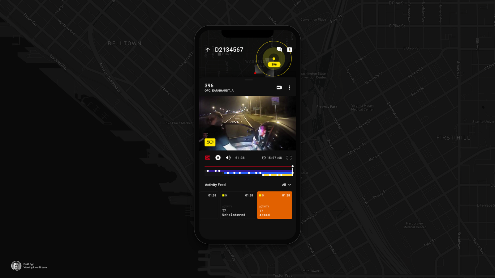
Tactical collaborate with all first responders and dispatch to manage the incident.
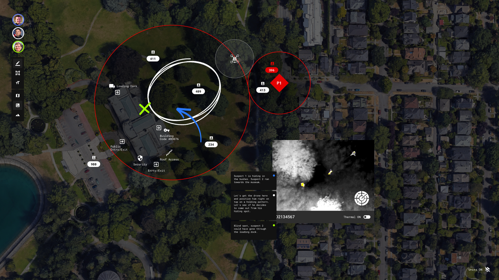
Incident timeline view for Detectives. Navigate through automatically generated timeline with annotations to get a great understanding of what truly happened.
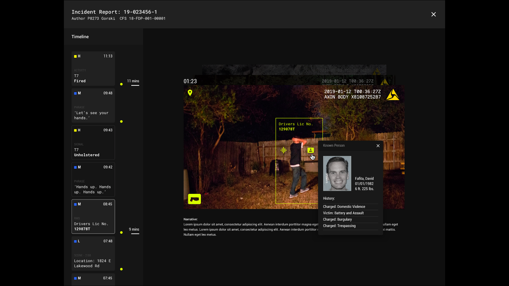
Design for Workflows
A major contribution to the company that my team and I established and evolved was to design for the workflows of our users across many different products and contexts. Our users don't think of products separately, they talk about Axon in general. For example: using 911 dispatch to gather information and send out a response, using our body, car and drone cameras to livestream and coordinate during the incident, and using our Records and Evidence Management applications in the car and at station to summarize what happened and prepare things for court if needed. Here is an example of how we visualize those workflows including where major painpoints are.
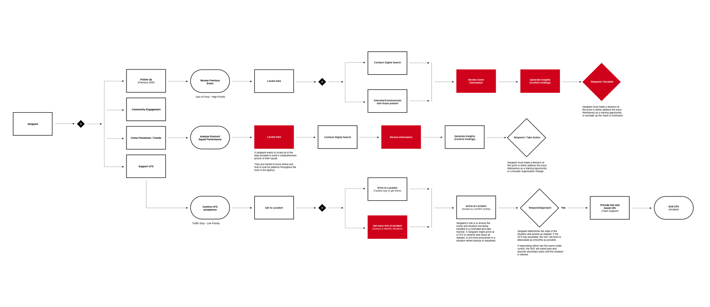
UX Discipline Building
I established and evolved ladder levels for Product Design, UX Research and Technical Writing at the company to make sure everyone had clear career goals and an understanding of how to work towards them. We were the first team at the company to have these completed and used. Also established our hiring approach, process and content, including how to include other disciplines in hiring UX team members and keeping a high bar for our talent. Hired 60+ people onto the UX team directly and was part of the hiring team for 150+ people from other disciplines like Product Management and Engineering.

UX Mechanisms to Deliver on Our Mission
A large UX team across many different product lines, and user workflows across many Axon and third party products, means making sure the quality of the user experience is high for individual products, but also across products. We developed 3 mechanisms and 9 types of reviews to nail both the high level strategic platform vision and experience, the details at the lowest level, and anything in between. This included how to collaborate with all disciplines and involve key stakeholders including the C-level executive team. These mechanisms and reviews constantly evolve as the company and product portfolio change so this will likely be a different set a year from now. It's very important to not make these slow things down too much and start feeling like the work itself rather than keep our eye on our users and what they need. Very important to keep these flexible and change them as needed to stay nimble and move fast.
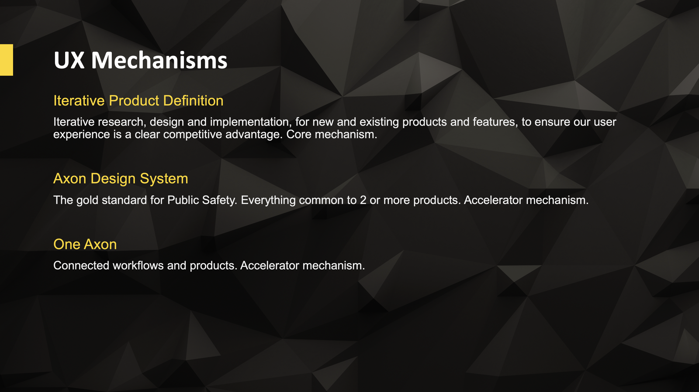
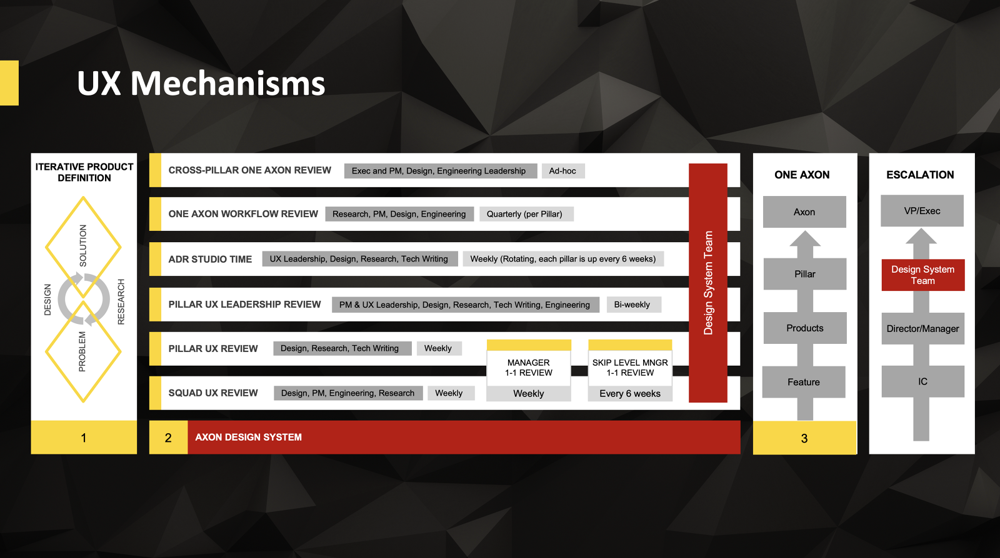
Hardware Devices
Axon has a substantial hardware portfolio of connected devices. Here are some samples of ones my team and I worked on. Key to the success of all of these is the way to enable workflows for first responders, for example by live streaming video, and automate steps such as evidence upload or 911 incident creation through connected sensors.
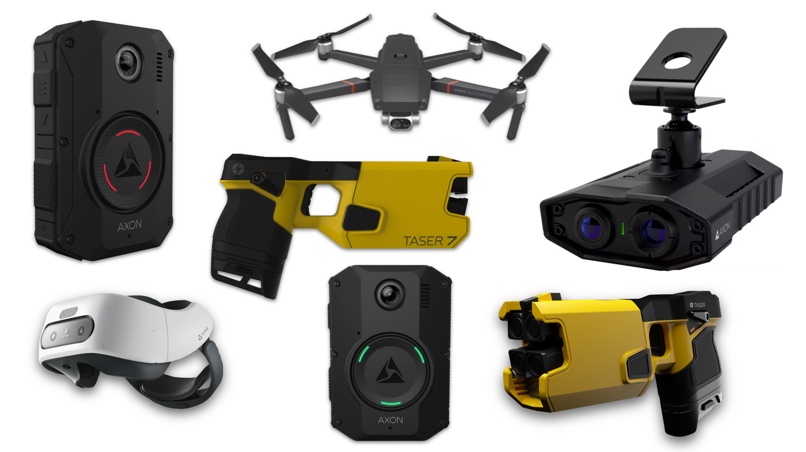
Software Design Samples: Before
When I joined Axon this was the state of the main software product line Evidence Management.

Software Design Samples: After
Here are some samples of the current state of the current Evidence Management products.

We built a new complex software product-line with Axon Records. Axon Records is similar to health records in the medical industry but the public safety version of it. This includes things like local standards for coding and capturing incidents, various databases (Federal, State, local) with person, vehicle and location data, and complex workflows from Patrol Officers, to Records Clerks, to Law Enforcement Leadership, Investigators, Prosecutors and Defenders in court, and the public.

0-1: Design 911 Dispatch from the Ground Up
We also built a 911 dispatch product line from the ground up. This includes all the software being used when a 911 call comes in to gather data, make decisions about resources to send out and coordinate all resources going out and on the scene including real-time audio and video communication. Since this is a very high stress situation, all applications and workflows need to be very easy to use and intuitive. A hard to use or inconsistent user experience can quite literally mean people die.

Mobile Applications
Axon has half a dozen mobile applications across various platforms. Here are some samples with existing/live apps on the outside and a vision for a real-time operations app in the middle.

Hardware and Software Convergence
A number of Axon products are a combination of one or more hardware devices with software applications to be used together. Here are a few examples of both the hardware and the software that work together.
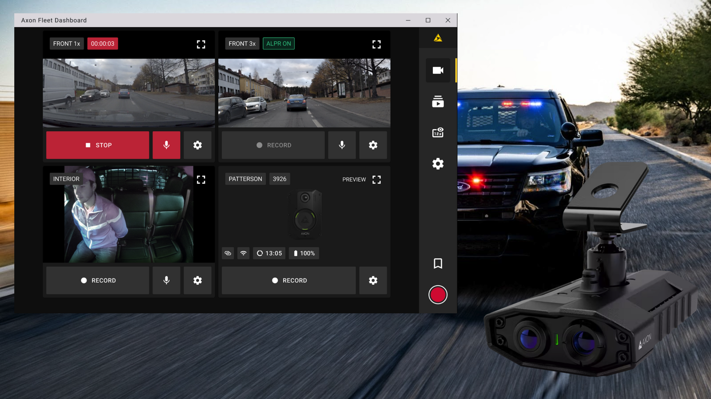


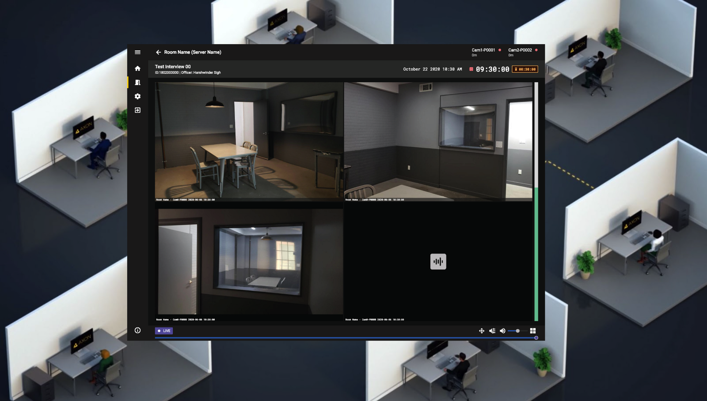
VR Training
We make VR training, for how to use our own devices as well as for how to approach situations (for example: encountering someone who is threatening to commit suicide). VR training retention is much higher than classroom training so an effective way to train Patrol Officers to better handle situations and equipment.
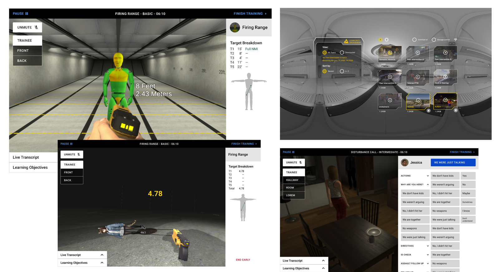
The Axon Design System
I built the first Design System at the company and created a Design Operations team to expand and evolve it over time. The Axon Design System governs interaction, visual, and workflow design and best practices across all Axon products. This includes mobile, in-car/tablet and desktop form factors in both light and dark themes to accommodate for context.
This design system is used on the Design side in Figma as a library with version control and metrics across 40+ Product Designers, and on the Engineering side with a component library built and evolved by a centralized Engineering team. We set and track adoption goals and metrics across all product lines and review them on a monthly basis. We are currently at around 80% adoption across product lines. Some examples:
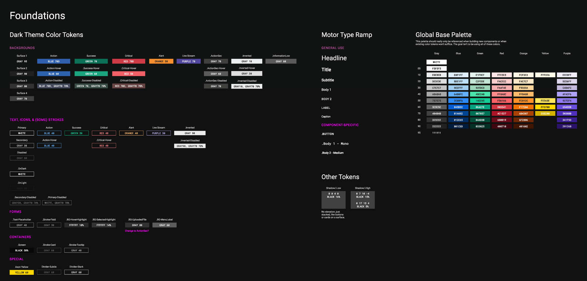
Motor theme: In-car - night

Station theme: At the station - day
Example of interaction and states of form controls.
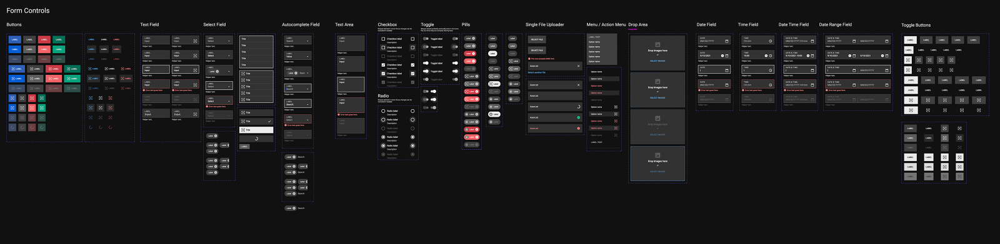
We also created a site capturing all things Axon Design System related for internal and external use. Here are some examples:

Product Branding
Examples of product branding work to tie together all the different Axon product lines.
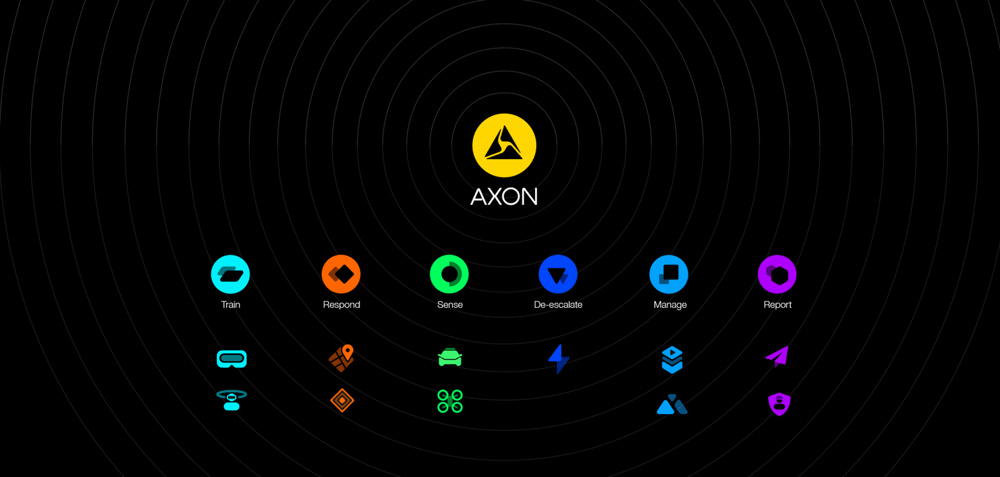
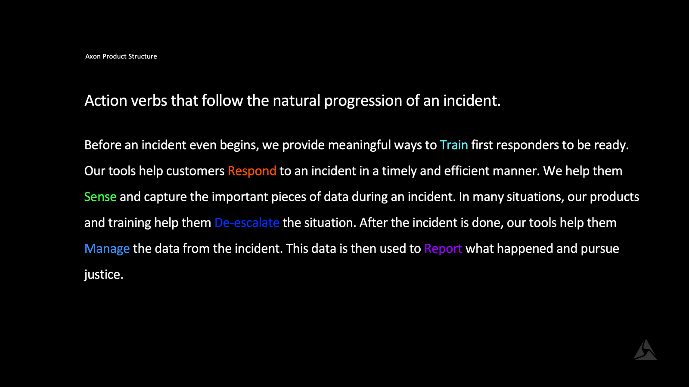